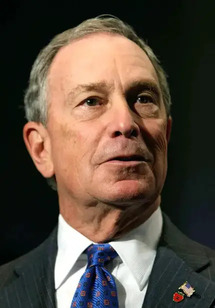
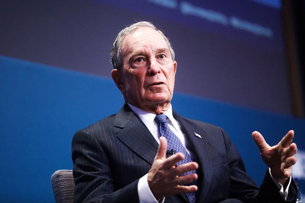

Early life and education
Bloomberg was born on February 14, 1942, at St. Elizabeth's Hospital, in the Brighton neighborhood of Boston, to William Henry Bloomberg (1906-1963), a bookkeeper for a dairy company,[5] and Charlotte (née Rubens) Bloomberg (1909-2011).[6][7] The Bloomberg Center at the Harvard Business School was named in William Henry's honor.[8][9] Bloomberg's family is Jewish,[10] and he is a member of the Temple Emanu-El in Manhattan.[11] Bloomberg's paternal grandfather, Rabbi Alexander "Elick" Bloomberg, was a Polish Jew.[12][13] Bloomberg's maternal grandfather, Max Rubens, was a Lithuanian Jewish immigrant from present-day Belarus,[14][15] and his maternal grandmother was born in New York to Lithuanian Jewish parents.[16]
The family lived in Allston until Bloomberg was two years old, followed by Brookline, Massachusetts, for two years, finally settling in the Boston suburb of Medford, Massachusetts, where he lived until after he graduated from college.[17]
Bloomberg became an Eagle Scout when he was twelve years old.[18][19][20] He graduated from Medford High School in 1960.[21] He went on to attend Johns Hopkins University, where he joined the fraternity Phi Kappa Psi. While there, he constructed the blue jay costume for the university's mascot.[22][23] He graduated in 1964 with a Bachelor of Science degree in electrical engineering.[24] In 1966, he graduated from Harvard Business School with a Master of Business Administration (MBA) degree.[25][26][27]
Business Career
In 1966, Bloomberg was hired for a job earning $9,000 per year[31] at Salomon Brothers, a large Wall Street investment bank.[32] Salomon Brothers later promoted him to the equities desk.[31] Bloomberg became a general partner at Salomon Brothers in 1972; he headed equity trading and, later, systems development.[32] Phibro Corporation bought Salomon Brothers in 1981, and the new management fired Bloomberg, paying him $10 million for his equity in the firm.[33][34][35]
Using the money he received from Phibro, Bloomberg—having designed in-house computerized financial systems for Salomon—set up a data services company named Innovative Market Systems (IMS)[36] based on his belief that Wall Street would pay a premium for high-quality business information, delivered instantaneously on computer terminals in a variety of usable formats.[37] The company sold customized computer terminals that delivered real-time market data, financial calculations and other analytics to Wall Street firms. The terminal, first called the Market Master terminal, was released to market in December 1982.[38]
In 1986, IMS renamed itself Bloomberg L.P.[32] Over the years, ancillary products including Bloomberg News, Bloomberg Radio, Bloomberg Message, and Bloomberg Tradebook were launched.[39] Bloomberg, L.P. had revenues of approximately $10 billion in 2018.[36] As of 2019, the company has more than 325,000 terminal subscribers worldwide and employs 20,000 people in dozens of locations.[36]
Wealth
In March 2009, Forbes reported Bloomberg's wealth at $16 billion, a gain of $4.5 billion over the previous year, the world's biggest increase in wealth from 2008 to 2009.[52] Bloomberg moved from 142nd to 17th in the Forbes list of the world's billionaires in only two years.[53][54] In the 2019 Forbes list of the world's billionaires, he was the ninth-richest person; his net worth was estimated at $55.5 billion.[55] Currently, Bloomberg's net worth is estimated at $94.5 billion, ranking him 7th on Forbes' list of billionaires.[56]
The culture of the company in the 1980s and 1990s has been compared to a fraternity, with employees bragging in the company's office about their sexual exploits.[40][41] The company was sued four times by female employees for sexual harassment, including one incident in which a victim claimed to have been raped.[42][43] To celebrate Bloomberg's 48th birthday, colleagues published a pamphlet entitled Portable Bloomberg: The Wit and Wisdom of Michael Bloomberg. Among various sayings that were attributed to him, several have subsequently been criticized as sexist or misogynistic.[44]
When he left the position of CEO to pursue a political career as the mayor of New York City, Bloomberg was replaced by Lex Fenwick[46][47] and later by Daniel L. Doctoroff, after his initial service as deputy mayor under Bloomberg.[48] After completing his final term as the mayor of New York City, Bloomberg spent his first eight months out of office as a full-time philanthropist. In fall 2014, he announced that he would return to Bloomberg L.P. as CEO at the end of 2014,[49] succeeding Doctoroff, who had led the company since February 2008.[49][50][51] Bloomberg resigned as CEO of Bloomberg L.P. to run for president in 2019.[36]
Political Career
Mayor of New York City
Bloomberg assumed office as the 108th mayor of New York City on January 1, 2002.[57] He won re-election in 2005 and again in 2009.[58] As mayor, he initially struggled with approval ratings as low as 24 percent;[59] however, he subsequently developed and maintained high approval ratings.[60] Bloomberg joined Rudy Giuliani, John Lindsay, and Fiorello La Guardia as re-elected Republican mayors in the mostly Democratic city.[61]
Bloomberg stated that he wanted public education reform to be the legacy of his first term and addressing poverty to be the legacy of his second.[62] Bloomberg chose to apply a statistical, metrics-based management approach to city government, and granted departmental commissioners' broad autonomy in their decision-making. Breaking with 190 years of tradition, he implemented what New York Times political reporter Adam Nagourney called a "bullpen" open office plan, similar to a Wall Street trading floor, in which dozens of aides and managerial staff are seated together in a large chamber. The design is intended to promote accountability and accessibility.[63] Bloomberg accepted a remuneration of $1 annually in lieu of the mayoral salary.[64]
As mayor, Bloomberg turned the city's $6 billion budget deficit into a $3 billion surplus, largely by raising property taxes.[65] Bloomberg increased city funding for the new development of affordable housing through a plan that created and preserved an estimated 160,000 affordable homes in the city.[66][67] In 2003, he implemented a successful smoking ban in all indoor workplaces, including bars and restaurants, and many other cities and states followed suit.[68] On December 5, 2006, New York City became the first city in the United States to ban trans-fat from all restaurants.[69] This went into effect in July 2008 and has since been adopted in many other cities and countries. Bloomberg created bicycle lanes, required chain restaurants to post calorie counts, and pedestrianized much of Times Square. In 2011, Bloomberg launched the NYC Young Men's Initiative, a $127 million initiative to support programs and policies designed to address disparities between young Black and Latino men and their peers, and personally donated $30 million to the project.[70] In 2010, Bloomberg supported the then-controversial Islamic complex near Ground Zero.[71]
Under the Bloomberg Administration, the New York City Police Department greatly expanded its stop and frisk program, with a sixfold increase in documented stops.[72] The policy was challenged in U.S. Federal Court, which ruled that the city's implementation of the policy violated citizens' rights under the Fourth Amendment of the Constitution and encouraged racial profiling.[73][74] Bloomberg's administration appealed the ruling; however, his successor, Mayor Bill de Blasio, dropped the appeal and allowed the ruling to take effect.[75] After the September 11 attacks, with assistance from the Central Intelligence Agency, Bloomberg's administration oversaw a controversial program that surveilled Muslim communities on the basis of their religion, ethnicity, and language.[76] The program was discontinued in 2014.[77] In a January 2014 Quinnipiac poll, 64 percent of voters called Bloomberg's 12 years as mayor "mainly a success".[78]
Mayoral elections
2001 election
In 2001, New York's Republican mayor Rudy Giuliani, was ineligible for re-election due to the city's limit of two consecutive terms. Bloomberg, who had been a lifelong member of the Democratic Party, decided to run for mayor on the Republican ticket.[79] Voting in the primary began on the morning of September 11, 2001. The primary was postponed later that day, due to the September 11 attacks. In the rescheduled primary, Bloomberg defeated Herman Badillo, a former Democratic congressman, to become the Republican nominee. After a runoff, the Democratic nomination went to New York City Public Advocate Mark Green.
Bloomberg received Giuliani's endorsement to succeed him in the 2001 election. He also had a huge campaign spending advantage. Although New York City's campaign finance law restricts the total amount of contributions that a candidate can accept, Bloomberg chose not to use public funds and therefore his campaign was not subject to these restrictions. He spent $73 million of his own money on his campaign, outspending Green by a ratio of five to one.[80] In the wake of the September 11 attacks, Bloomberg's administration made a successful bid to host the 2004 Republican National Convention. The convention drew thousands of protesters, among them New Yorkers who despised George W. Bush and the Bush administration's pursuit of the Iraq War.[81][82]
2005 election
Bloomberg was re-elected mayor in November 2005 by a margin of 20 percent, the widest margin ever for a Republican mayor of New York City.[83] He spent almost $78 million on his campaign, exceeding the record of $74 million he spent on the previous election. In late 2004 or early 2005, Bloomberg gave the Independence Party of New York $250,000 to fund a phone bank seeking to recruit volunteers for his re-election campaign.[84]
Former Bronx Borough President Fernando Ferrer won the Democratic nomination to oppose Bloomberg in the general election. Thomas Ognibene sought to run against Bloomberg in the Republican Party's primary election.[85] The Bloomberg campaign successfully challenged the signatures Ognibene submitted to the Board of Elections to prevent Ognibene from appearing on ballots for the Republican primary.[85] Instead, Ognibene ran on only the Conservative Party ticket.[86] Ognibene accused Bloomberg of betraying Republican Party ideals, a feeling echoed by others.[87]
Bloomberg opposed the confirmation of John Roberts as Chief Justice of the United States.[91] Bloomberg is a staunch supporter of abortion rights and did not believe that Roberts was committed to maintaining Roe v. Wade.[91] In addition to Republican support, Bloomberg obtained the endorsements of several prominent Democrats: former Democratic mayor Ed Koch; former Democratic governor Hugh Carey; former Democratic City Council Speaker Peter Vallone, and his son, Councilman Peter Vallone Jr.; former Democratic Congressman Floyd Flake (who had previously endorsed Bloomberg in 2001), and Brooklyn Borough President Marty Markowitz.[92]
2009 election
On October 2, 2008, Bloomberg announced he would seek to extend the city's term limits law and run for a third mayoral term in 2009. Bloomberg said, "Handling this financial crisis while strengthening essential services ... is a challenge I want to take on," Bloomberg said at a news conference. "So should the City Council vote to amend term limits, I plan to ask New Yorkers to look at my record of independent leadership and then decide if I have earned another term."[93]
Ronald Lauder, who campaigned for New York City's term limits in 1993 and spent over 4 million dollars of his own money to limit the maximum years a mayor could serve to eight years,[94] sided with Bloomberg and agreed to stay out of future legality issues.[95] In exchange, he was promised a seat on an influential city board by Bloomberg.[96]
Some people and organizations objected and NYPIRG filed a complaint with the City Conflict of Interest Board.[97] On October 23, 2008, the city council voted 29-22 in favor of extending the term limit to three consecutive four-year terms.[98] After two days of public hearings, Bloomberg signed the bill into law on November 3.[99]
Bloomberg's bid for a third term generated some controversy. Civil libertarians such as former New York Civil Liberties Union Director Norman Siegel and New York Civil Rights Coalition Executive Director Michael Meyers joined with local politicians to protest the process as undermining the democratic process.[100]
Bloomberg's opponent was Democratic and Working Families Party nominee Bill Thompson, who had been New York City Comptroller for the past eight years and before that, president of the New York City Board of Education.[101] Bloomberg defeated Thompson by a vote of 51 percent to 46 percent.[102] Bloomberg spent $109.2 million on his 2009 campaign, outspending Thompson by a margin of more than 11 to one.[103] After the release of Independence Party campaign filings in January 2010, it was reported that Bloomberg had made two $600,000 contributions from his personal account to the Independence Party on October 30 and November 2, 2009.[104] The Independence Party then paid $750,000 of that money to Republican Party political operative John Haggerty Jr.[105]
This prompted an investigation beginning in February 2010 by the office of New York County District Attorney Cyrus Vance Jr. into possible improprieties.[106] The Independence Party later questioned how Haggerty spent the money, which was to go to poll-watchers.[107] Former New York State Senator Martin Connor contended that because the Bloomberg donations were made to an Independence Party housekeeping account rather than to an account meant for current campaigns, this was a violation of campaign finance laws.[108] Haggerty also spent money from a separate $200,000 donation from Bloomberg on office space.[109]
Philanthropy
In August 2010, Bloomberg signed The Giving Pledge, whereby the wealthy pledge to give away at least half of their wealth. Since then, he has given away $9.5 billion overall including $3.3 billion in 2019. According to Chronicle of Philanthropy, he gave away the most money of any philanthropist in 2019.[183][184]
His Bloomberg Philanthropies foundation focuses on public health, the arts, government innovation, the environment, and education.[185][186] Through the foundation, he donated or pledged $767 million in 2018,[187][186][188] and more than $1 billion in 2019.[189]
2011 recipients included the Campaign for Tobacco-Free Kids; Centers for Disease Control and Prevention; Johns Hopkins Bloomberg School of Public Health; World Lung Foundation and the World Health Organization. According to The New York Times, Bloomberg was an "anonymous donor" to the Carnegie Corporation from 2001 to 2010, with gifts ranging from $5 million to $20 million each year.[190] The Carnegie Corporation distributed these contributions to hundreds of New York City organizations ranging from the Dance Theatre of Harlem to Gilda's Club, a non-profit organization that provides support to people and families living with cancer. He continues to support the arts through his foundation.[191]
Bloomberg gave $254 million in 2009 to almost 1,400 nonprofit organizations,[192] saying, "I am a big believer in giving it all away and have always said that the best financial planning ends with bouncing the check to the undertaker."[193][194]
COVID-19 response
During the 2020 COVID-19 pandemic and its aftermath, Bloomberg through his foundation committed to a wide range of urgent causes including researching treatments and vaccines, leading contact tracing to root out the virus, supporting the World Health Organization, and funding global efforts to fight the spread of the disease and protect vulnerable populations. Action included:
- Cofounding a $75 million fund for nonprofits impacted by COVID-19 in New York City[195]
- Donating $6 million to World Central Kitchen to serve meals to health care workers in New York City[196]
- Partnering with Johns Hopkins University to train COVID-19 contact tracers through its school of public health and search for a treatment of the virus.[197][198]
- Convening mayors through a partnership with Harvard College to learn and discuss their pandemic response, featuring a bipartisan roster of speakers and attendees.[199][200]
- Leading New York's contact tracing effort[201]
- Launching an information and action sharing network for cities through the National League of Cities[202]
- Supporting international efforts to combat the spread of COVID-19 and prepare regional leaders through the International Rescue Committee, the World Health Organization, Vital Strategies and other partners[203][204][205]
Environmental advocacy
Bloomberg is an environmentalist and has advocated policy to fight climate change at least since he became the mayor of New York City. At the national level, Bloomberg has consistently pushed for transitioning the United States' energy mix from fossil fuels to clean energy. In July 2011, Bloomberg Philanthropies donated $50 million to Sierra Club's Beyond Coal campaign, allowing the campaign to expand its efforts to shut down coal-fired power plants from 15 states to 45 states.[206][207] In 2015, Bloomberg announced an additional $30 million contribution to the Beyond Coal initiative, matched with another $30 million by other donors, to help secure the retirement of half of America's fleet of coal plants by 2017.[208] In July 2017, Europe Beyond Coal was established to phase out use of coal on the continent by 2030.[209] Austria closed its final coal-fired plant in April 2020.[210] In early June 2019, Bloomberg pledged $500 million to reduce climate impacts and shut remaining coal-fired power plants by 2030 via the new Beyond Carbon initiative.[211][212]
Bloomberg Philanthropies awarded a $6 million grant to the Environmental Defense Fund in support of strict regulations on fracking in the 14 states with the heaviest natural gas production.[213] In 2013, Bloomberg and Bloomberg Philanthropies launched the Risky Business initiative with former Treasury Secretary Hank Paulson and hedge-fund billionaire Tom Steyer. The joint effort worked to convince the business community of the need for more sustainable energy and development policies, by quantifying and publicizing the economic risks the United States faces from the impact of climate change.[214] In January 2015, Bloomberg led Bloomberg Philanthropies in a $48-million partnership with the Heising-Simons family to launch the Clean Energy Initiative. The initiative supports state-based solutions aimed at ensuring America has a clean, reliable, and affordable energy system.[215]
2013, he served as the chairman of the C40 Cities Climate Leadership Group, a network of the world's biggest cities working together to reduce carbon emissions.[216] During his tenure, Bloomberg worked with President Bill Clinton to merge C40 with the Clinton Climate Initiative, with the goal of amplifying their efforts in the global fight against climate change worldwide.[217] He serves as the president of the board of C40 Cities.[218] In January 2014, Bloomberg began a five-year commitment totaling $53 million through Bloomberg Philanthropies to the Vibrant Oceans Initiative. The initiative partners Bloomberg Philanthropies with Oceana, Rare, and Encourage Capital to help reform fisheries and increase sustainable populations worldwide.[219] In 2018, Bloomberg joined Ray Dalio in announcing a commitment of $185 million towards protecting the oceans.[220]
In 2014, United Nations Secretary General Ban Ki-moon appointed Bloomberg as his first Special Envoy for Cities and Climate Change to help the United Nations work with cities to prevent climate change.[221] In September 2014, Bloomberg convened with Ban and global leaders at the UN Climate Summit to announce definite action to fight climate change in 2015.[222] In 2018, Ban's successor António Guterres appointed Bloomberg as UN envoy for climate action.[223][224] He resigned in November 2019, in the run-up to his presidential campaign.[225] On 5 February 2021, however, he was re-appointed by Guterres as his Special Envoy on Climate Ambition and Solutions in the lead-up to the climate conference in Scotland scheduled for November 2021.[226]
Bloomberg Philanthropies, Activism and Awards
| Topic | Date | Details |
|---|---|---|
| Environmental Advocacy | 2011 | Bloomberg Philanthropies donated $50 million to Sierra Club's Beyond Coal campaign, allowing the campaign to expand its efforts to shut down coal-fired power plants from 15 states to 45 states. |
| Climate Change Initiatives | 2015 | Bloomberg announced an additional $30 million contribution to the Beyond Coal initiative, matched with another $30 million by other donors, to help secure the retirement of half of America's fleet of coal plants by 2017. |
| Global Efforts | 2018 | Bloomberg joined Ray Dalio in announcing a commitment of $185 million towards protecting the oceans. |
| UN Special Envoy | 2014 | Bloomberg was appointed as the UN Special Envoy for Cities and Climate Change to help the United Nations work with cities to prevent climate change. |
| Compact of Mayors | 2014 | Bloomberg, Ban Ki-moon, and global city networks launched the Compact of Mayors, a global coalition of mayors pledging to reduce local greenhouse gas emissions. |
| Climate Summit | 2015 | Bloomberg and Paris mayor Anne Hidalgo created the Climate Summit for Local Leaders, pledging to cut carbon emissions by 3.7 gigatons annually by 2030. |